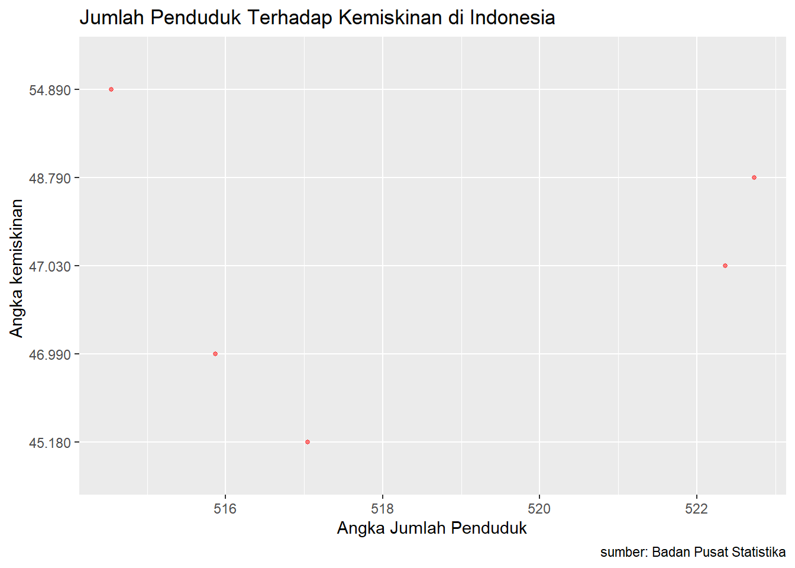

Analisis Pengaruh Jumlah Penduduk Terhadap Tingkat Kemiskinan di Kota Surakarta Periode 2017-2021
Metode Penelitian Politeknik APP Jakarta
Author
Annisa Eka Wati
Published
January 20, 2023
1 Pendahuluan
1.1 Latar belakang
Kemiskinan merupakan salah satu permasalahan bagi negara-negara di dunia terutama pada negara berkembang. Bagi Indonesia yang merupakan salah satu negara berkembang yang ada di ASEAN, masalah kemiskinan bukanlah suatu hal yang baru. Hampir semua periode pemerintahan yang ada di Indonesia menempatkan masalah kemiskinan menjadi isu pembangunan. kemiskinan di Indonesia bersifat multidimensial. Menurut para ahli ekonomi (Arsyad, 2010) kemiskinan yang bersifat multidimensial dapat dilihat dari berbagai aspek diantaranya aspek primer dan aspek sekunder. Aspek primer berupa miskin aset, organisasi sosial politik, dan pengetahuan serta keterampilan yang rendah. Sedangkan aspek sekunder berupa miskin akan jaringan sosial, sumber keuangan, dan informasi. Permasalahan kemiskinan berhubungan erat dengan pembangunan karena term ini adalah dua hal yang sukar dipisahkan serta saling mempengaruhi satu dengan lainnya. Kemiskinan ialah tanggung jawab bersama terutama bagi pemerintah sebagai penyangga proses perbaikan kehidupan masyarakat dalam sebuah pemerintahan, untuk segera mencari jalan keluar sebagai upaya pemberantasan kemiskinan. Jumlah penduduk yang besar dapat menggerakan pasar dari permintaan melalui multiplier effect karena adanya aggregat demand. Penduduk dalam pembangunan ekonomi suatu daerah adalah masalah mendasr karena pertumbuhan penduduk yang tidak terkendali maka dapat mengakibatkan kegagalan untuk mencapai tujuan pembangunan ekonomi, yaitu kesejahteraan masyarakat dan pengentasan kemiskinan.
1.2 Ruang lingkup
Dalam penelitian terdapat pembatasan masalah yang dilakukan guna membatasi topik permasalahan agar tetap sesuai tujuan penulisan serta menghindari penyimpangan pokok bahasan. Sesuai uraian yang terdapat dalam latar belakang, maka penulis menetapkan rumusan penelitian ini, yaitu pengaruh jumlah penduduk terhadap tingkat kemiskinan di Kota Surakarta.
1.3 Rumusan masalah
Apakah jumlah penduduk mempengaruhi tingkat kemiskinan di kota Surakarta tahun 2017-2021?
Bagaimana pengaruh jumlah penduduk terhadap tingkat kemiskinan di kota Surakarta tahun 2017-2021?
1.4 Tujuan dan manfaat penelitian
Penelitian ini dibuat dengan tujuan untuk mengetahui pengaruh dari jumlah penduduk dan pengangguran terhadap tingkat kemiskinan di Kota Surakarta dalam periode 2017-2021. Dengan mengetahui dampak yang ditimbulkan, maka diharapkan dapat menjadi salah satu bahan pertimbangan dalam mengambil kebijakan untuk menguranngi angka kemiskinan. Penelitian ini juga dibuat dibuat untuk memenuhi Ujian Akhir Semester (UAS) mata kuliah Metodologi Penelitian.
1.5 Package
Packages yang digunakan dalam penelitian ini sebagai berikut:
Salah satu akar permasalahan kemiskinan yaitu pertumbuhan penduduk yang tinggi, di mana tingkat kelahiran penduduk masih sangat tinggi, sedangkan tingkat kematiannya juga masih tinggi namun relatif sudah jauh lebih rendah. Menurut Malthus, kenaikan jumlah penduduk yang terus menerus merupakan unsur yang perlu untuk adanya tambahan permintaan. Tetapi kenaikan jumlah penduduk saja tanpa diikuti dengan kemajuan faktor-faktor atau unsur-unsur perkembangan yang lain sudah tentu tidak akan menaikkan pendapatan dan tidak akan menaikkan permintaan. Dengan demikian tumbuhnya jumlah penduduk saja justru akan menurunkan tingkat upah dan berarti pula memperendah biaya produksi. Turunnya biaya produksi akan memperbesar keuntungan-keuntungan para kapitalis dan mendorong mereka untuk terus berproduksi. Tetapi keadaan ini hanya sementara saja sifatnya, sebab permintaan efektif (effective demand) akan semakin berkurang karena pendapatan buruh juga semakin berkurang (Widarukmi, 2015).
B. Tingkat Kemiskinan
Lembaga Badan Pusat Statistik dalam Statistic Indonesia (2020) menjelaskan bahwa “penduduk adalah semua orang yang berdomisili di wilayah geografis Republik Indonesia selama 6 bulan atau lebih dan atau mereka yang berdomisili kurang dari 6 bulan tetapi bertujuan untuk menetap”. Adapun, menurut Said (2001), yang dimaksud dengan penduduk adalah “jumlah orang yang bertempat tinggal di suatu wilayah pada waktu tertentu dan merupakan hasil dari proses-proses demografi yaitu fertilitas, mortalitas, dan migrasi.”
3 Metode penelitian
3.1 DATA
Data Jumlah Penduduk di Kota Surakarta
Tahun
Jumlah Penduduk
2017
515,54
2018
515,87
2019
517,05
2020
522,36
2021
522,73
Data Jumlah Kemiskinan di Kota Surakarta
Tahun
Tingkat Kemiskinan
2017
54.890
2018
46.990
2019
45.180
2020
47.030
2021
48.790
dat<-read_excel('Data 1.xlsx')ggplot(data=dat,aes(x=X,y=Y)) +geom_point(alpha=0.5, size=1, color='red') +# setiap nambah command, selalu kasih tanda +labs(title="Jumlah Penduduk Terhadap Kemiskinan di Indonesia",x="Angka Jumlah Penduduk",y="Angka kemiskinan ",caption ="sumber: Badan Pusat Statistika")# yang terakhir ga perlu +

Figure 1: City and highway mileage for 38 popular models of cars.Color by number of cylinders
3.2 Metode analisis
Metode analisis yang digunakan pada penelitian ini menggunakan sumber data sekunder dari Badang Pusat Statistik Kota Surakarta. Data pada analisis penelitian ini ditulis secara sistemastis dan berbentuk urutan data waktu atau time series periode 2017-2021. Penelitian ini menggunakan teknik analisis kusntitatif dan menggunakan penjabaran deskriptif. Metode yang dipilih adalah regresi univariat atau Ordinary Least Square (OLS) dengan 1 variabel independen. Penelitian ini bermaksud untuk mencari hubungan antara jumlah penduduk dengan tingkat kemiskinan di Kota Surakarta tahun 2017-2021.
Y^= a+bX
Y= variabel response atau dependent
X= variabel predictor atau independent
a=konstantan
b= koefisien regresi ; besaran response yang ditimbulkan oleh predictor
4 Pembahasan
4.1 Pembahasan masalah
Dikarenakan pada penelitian ini saya menggunakan metode OLS, maka saya hanya menghubungkan pengaruh jumlah penduduk terhadap tingkat kemiskinan di Kota Surakarta tahun 2017-2021.
Berdasarkan data plot diatas dapat diketahui bahwa tingkat kemiskinan paling besar terjadi di tahun 2017 sejumlah 54.890 jiwa dan tingkat kemiskinan paling rendah pada tahun 2019 sejumlah 45.180 jiwa.
Call:
lm(formula = Y ~ X, data = dat)
Residuals:
1 2 3 4 5
4.8702 -2.5482 -3.9288 -0.1429 1.7496
Coefficients:
Estimate Std. Error t value Pr(>|t|)
(Intercept) 237.2933 275.5154 0.861 0.452
X -0.3640 0.5313 -0.685 0.543
Residual standard error: 4.03 on 3 degrees of freedom
Multiple R-squared: 0.1352, Adjusted R-squared: -0.153
F-statistic: 0.4692 on 1 and 3 DF, p-value: 0.5425
Berdasarkan hasil regresi diatas, dapat kita terjemahkan secara sederhana yaitu: Y^ = 237.2933 + (-0.3640)X
Nilai konstanta memiliki nilai positif sebesar 237.2933 yang menunjukkan pengaruh positif antara variabel dependent dan independent
5 Kesimpulan
Pertumbuhan penduduk berkaitan dengan kemiskinan dan kesejahteraan masyarakat. Pengetahuan tentang aspek-aspek dan komponen demografi seperti fertilitas, mortalitas, morbiditas, migrasi, ketenagakerjaan, perkawinan, dan aspek keluarga dan rumah tangga akan membantu para penentu kebijakan dan perencana program untuk dapat mengembangkan program pembangunan kependudukan dan peningkatan kesejahteraan masyarakat yang tepat sasaran. Berdasarkan hasil analisis regresi linear sederhana dapat disimpulkan bahwa variabel dari Jumlah Penduduk (X) memiliki pengaruh negatif terhadap variabel Jumlah Kemiskinan (Y) di Kota Surakarta.
6 Saran
Berdasarkan uraian penelitian diatas, terdapat beberapa saran yang dapat dilakukan, sebagai berikut: 1) Menggalakkan program KB atau Keluarga Berencana untuk membatasi jumlah anak dalam suatu keluarga secara umum dan masal, sehingga akan mengurangi jumlah angka kelahiran. 2) Menunda masa perkawinan agar dapat mengurangi jumlah angka kelahiran yang tinggi. 3) Pengentasan kemiskinan melalui kebijakan kependudukan, seperti: a. Penerapan kebijakan kependudukan bagi pengentasan kemiskinan adalah dengan pencanangan KB (Keluarga berencana) dengan cara penyediaan kontrasepsi gratis bagi keluarga miskin. Hal ini dapat secara signifikan menurunkan tingkat kelahiran di keluarga miskin sehingga program penanganan kemiskinan yang dilakukan setelahnya dapat berjalan lebih optimal dan terasa. b. Pemerintah dapat menghemat dana program penanganan kemiskinan dengan mengalokasikannya ke kampanye penggunaan alat kontrasepsi. Selain itu, pemerintah daerah akan menjadi lebih fokus terhadap kelompok rumah tangga miskin yang sudah bisa mengendalikan tingkat kelahiran mereka. Beban tanggungan mereka yang berupa anak akan menjadi lebih sedikit, sehingga program penanganan kemiskinan akan lebih terasa dan bermakna untuk pengembangan mereka.
7 Referensi
Badan Pusat Statistik. (2022). Jumlah Penduduk Menurut Kabupaten/Kota di Provinsi Jawa Tengah, 2017-2021. BPS Kota Surakarta.
Badan Pusat Statistik. (2022). Jumlah Penduduk Miskin, 2013-2021. BPS Kota Surakarta.
Mulyadi. (2008). Ekonomi Sumber Daya manusia Dalam Perspektif Pembangunan. Jakarta : Rajawali Pers.
Said, Rusli. (2001). Pengantar Ilmu Kependudukan. Jakarta : Lembaga Penelitian dan Pengembangan Ekonomi dan Sosial.
Sukirno, S. (2004). Makro Ekonomi Teori Pengantar. Jakarta: Raja Grafindo Persada.